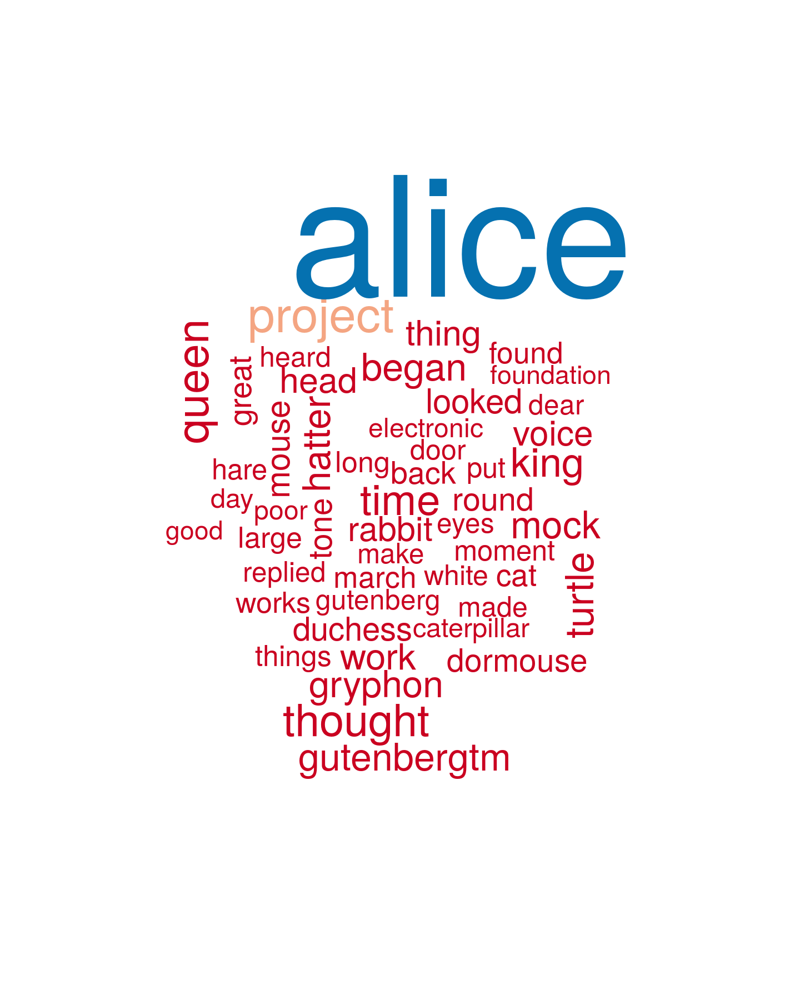
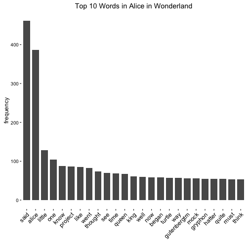

- Visualize a text
- Get the main topics at a glance
- Find the most important words in a document
For any text file!
Gail Muldoon
Select:
Note: Numbers are automatically removed, stemmed words are combined, and all words are changed to lower case
